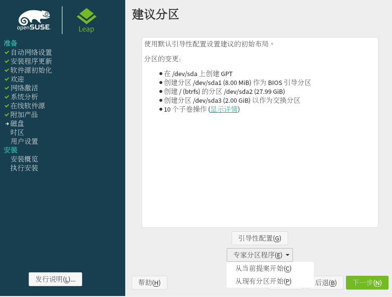
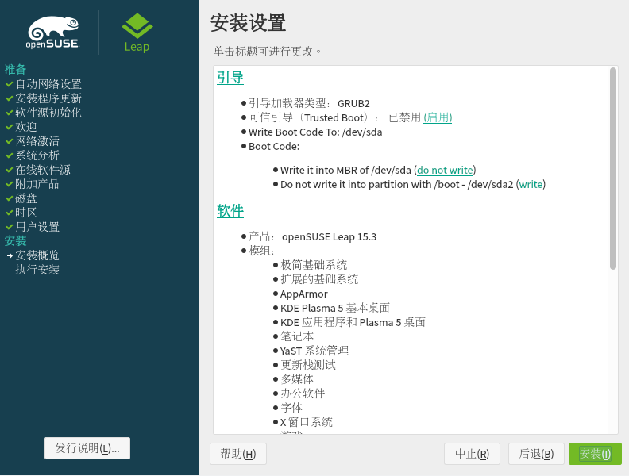
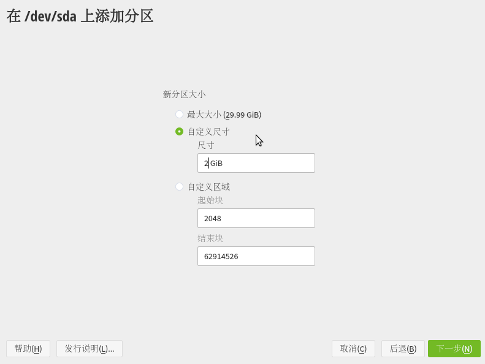
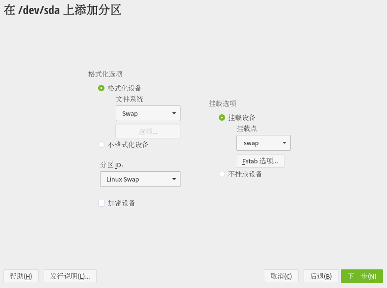

安装 openSUSE¶
参考资料¶
本文参考了 openSUSE 中文 Wiki 的一些页面：
你可以前往 openSUSE wiki 查阅本指南省略的部分。
准备¶
openSUSE 有两个正式的发行分支：Leap 和 Tumbleweed。
openSUSE 项目每 8 个月发布一个 Leap 的新版本，每个版本有 18 个月的维护周期，Leap 致力于为用户提供稳定的桌面环境和成熟的软件包。Tumbleweed 是 openSUSE 的滚动发行分支，致力于为用户提供最新的稳定版内核、软件和桌面环境。
对于想要尝试一下 Leap 的用户，点击下方连接下载 Leap 的镜像：
制作安装介质¶
请参照前文自行下载 ISO 并创建安装介质。
安装系统¶
-
启动系统：将 U 盘或 ISO 文件插入到电脑或虚拟机中，重新启动计算机。紧接着，你可以看到 Boot Screen（启动菜单），点击 F8 切换到简体中文页面。通过向上/向下和回车键来选择 Installation（安装）。

-
欢迎界面：然后你会进入欢迎界面。在页面的顶部可以设置语言和键盘布局。设置好语言以后，YaST 会自动为您选择合适的键盘布局。如果自动选择的不正确的话，您可以通过键盘布局下拉菜单来更正它。点击下一步，YaST2 会开始刷新软件源，并询问你是否启用在线源。由于大陆特殊的网络环境，为了防止安装错误或中断，你应当选择否。

-
选择桌面环境：接下来您可以选择一个你偏好的桌面环境来作为您的默认桌面环境（有关各个桌面的介绍详见此处）。如果你是高级用户，并想安装 KDE/GNOME/Xfce 以外的桌面环境或不需要 GUI，你可以选择通用桌面或事务服务器。

-
磁盘分区：接下来显示了一个建议的磁盘分区方案。如果您在同一块硬盘上还安装了其他操作系统（比如，Windows 或者其他 Linux），YaST 不会删除它而是缩小那个系统所在磁盘的空间，好腾出足够的空间来安装 openSUSE。
 如果对建议配置不满意，您也可以点击专家分区程序。如果点击了该项，会加载分区程序，然后显示建议配置的细节以供您编辑。 点击 从现有提案开始 ，会显示右侧用于编辑分区的界面。关于手动分区的细节将在后文详述，你也可以选择接受 openSUSE 默认的分区方案。
-
设置时区：接下来，您需要设定在地图上显示的时区。您可以点击地图上的国家来选择时区，或者使用下拉菜单来选择时区。
openSUSE 会自动检测已安装的系统，如果你是计划成为 win/openSUSE 双系统用户，并且预先安装了 windows ，openSUSE 会自动取消勾选设置系统时间为 UTC 调整世界时。如果没有安装双系统的话（因为视窗系统不使用 UTC 时间），也可以把系统时间设定到 UTC 调整世界时。 在时区下面显示着当前设定的时间。如果不正确的话，可以点击手工手动变更它。 如果您有可用的网络连接，也可以选择与 NTP 服务器同步来使用时间服务器。可以从下拉列表里手选一个时间服务器。点击接受就会自动从它同步正确的时间。
在时区下面显示着当前设定的时间。如果不正确的话，可以点击手工手动变更它。 如果您有可用的网络连接，也可以选择与 NTP 服务器同步来使用时间服务器。可以从下拉列表里手选一个时间服务器。点击接受就会自动从它同步正确的时间。

-
创建主要用户：输入您的全名，openSUSE 会自动为您选择一个用户名，不满意的话也可以自己修改。指定一个新密码，并输入两次确认。系统会默认使用该密码作为系统管理员（也就是 root 根用户）的密码。同样，自动登录也是默认开启的。然而，如果您想要让系统更安全一些，或者安装的将是一个多用户系统，也可以取消自动登录。
 如果在前一屏中您取消选中了对系统管理员使用此口令选项，接下来你得为根用户 Root 提供它的认证口令（密码）。在本例中使用了一个简单密码，YaST 会对这种过于简单的密码做出警示：
如果在前一屏中您取消选中了对系统管理员使用此口令选项，接下来你得为根用户 Root 提供它的认证口令（密码）。在本例中使用了一个简单密码，YaST 会对这种过于简单的密码做出警示：

-
安装设置：这里是 YaST 将要对你的磁盘做什么事情的一个概览。请通读一遍列表，如果您想要改动任何一个选项，可以通过点击那个章节的标题来实现。你可以通过 YaST 的帮助文本来了解每个选项的意思。
 有关在此步继续对系统进行配置的指南详见此处。
有关在此步继续对系统进行配置的指南详见此处。
-
开始安装：如果你同意此概览中的内容，点击安装。你会被提示确认你是不是真的想要进行下去。再次点击安装以确认。
 确认后，YaST 现在正在安装您的崭新的 openSUSE 系统。在第一次重启系统前，YaST 会自动配置您系统的硬件和网络设置。一旦完成，您的计算机将自动重启。在计算机重启时，记得取出 openSUSE 安装盘或移除虚拟盘片。
手动分区¶
首先，在建议分区页面点击正下方的专家分区程序，然后你可以选择 openSUSE 预置的分区方案，也可选择自己修改分区方案。从当前提案开始表示你选择以 openSUSE 默认的分区方案为基础进行修改，从现有分区开始表示是你选择自己创建分区。
注意：
- 本文使用的演示用虚拟机的磁盘空间为 30GB（
/dev/sda）。 - 实际操作中，SWAP 分区大小请参考安装 Fedora - 手动分区中提供的参考表格。
- openSUSE 的硬件需求要求至少需要 10GB 的空间进行安装系统，如果需要图形化界面，最小的磁盘空间需要大于 16GB 。在实体机上日常使用推荐的空间大小为 40GB 及以上。
- 请不要让 windows 和 openSUSE 共享同一个 EFI 分区。
- 如果你是 Tumbleweed 用户，建议使用官方的 btrfs 文件系统，且不建议你关闭 Snapper 快照功能。
- 在你确定接受分区方案前，你所作的更改都不会影响到原有的磁盘分区。
安装 openSUSE 所需的基本分区：
| 分区名称 | 挂载点 | 分区大小 | 文件系统类型 |
|---|---|---|---|
| root | / |
16GB 及以上（推荐 40GB 或以上） | 推荐使用 btrfs |
| efi | /boot/efi/ |
512MB | fat32 或 vfat |
| swap | swap |
依照实际情况而定 | swap |
| home | /home |
依照实际情况而定 | xfs、ext4、btrfs 等 |
找到你预留的空白分区，首先需要先创建交换分区（或者你可以先创建 EFI。），请先点击你要创建分区的磁盘，例如下图中的 /dev/sda，点击下方的添加分区，然后选择自定义尺寸，并在下方输入 2：

点击下一步，并选择交换区，然后点击下一步；检查分区 ID、文件系统和挂载点是否与下图一致，然后点击下一步：

这样我们就创建了第一个分区：

依照同样的方法，你需要再创建一个根分区（注意，创建根分区时，请将分区的角色选择为操作系统，新建的根分区默认启用了 btrfs 子卷 ；/home 分区则应该选择数据和 ISV 应用程序。）：

如果创建了错误的分区，你只需要选中错误的分区，然后点击右下角的删除即可。
要挂载已有的磁盘分区，只需要点击相应的分区，然后点击左下方的 Edit，然后添加挂载点即可。注意在编辑分区的时候，请点击格式化设备下方的不格式化设备，以免数据因为操作失误而被格式化。
如果你有大量的文件存放在机械硬盘中，考虑到 Linux 会频繁读写用户文件夹中的一些配置文件，可以先将机械盘挂载到 / 、/home 或用户文件下面，再将 /home 分区放在固态硬盘中（或不设立独立的 /home 分区）。主要目的是强调用户文件和系统文件互相隔离，但具体实操手段并不唯一。
- 我误删了某个子卷，怎么办？
点击根分区，再点击下方的
add subvolume，然后输入你误删的分区的名称（@ + 子卷名，如@/home），然后点击接受。
经过一番折腾后，如果你确认你的分区方案没有问题，点击接受，然后再点击下一步（此时你可以预览你的分区方案）。
额外内容¶
有关重装系统、双引导启动等内容另见 SDB:DVD 安装方式。
创建日期: 2022-01-16 07:14:26